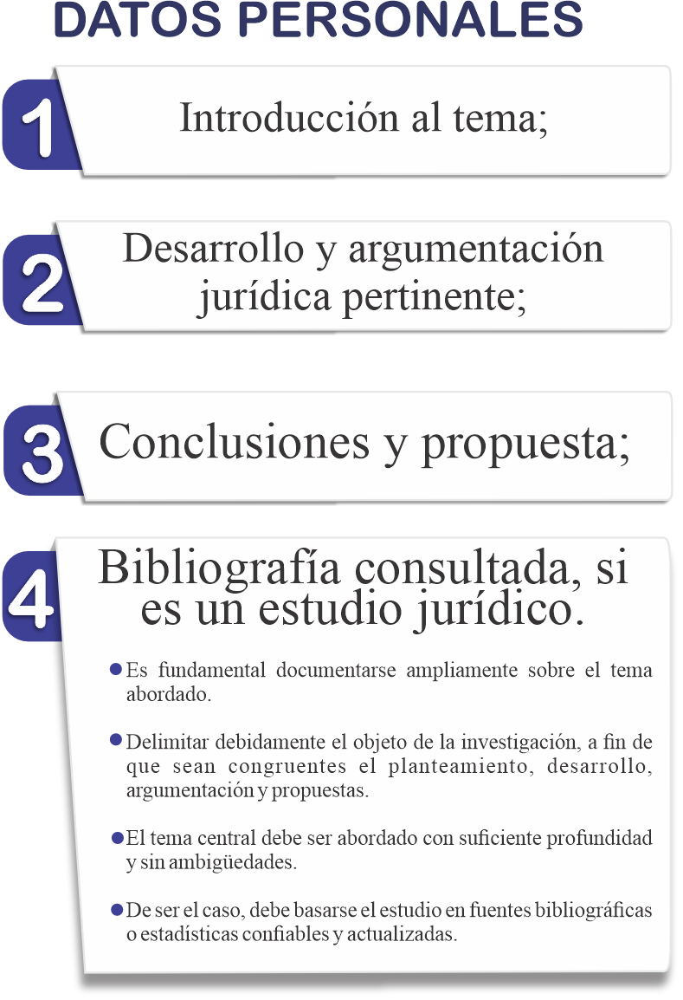
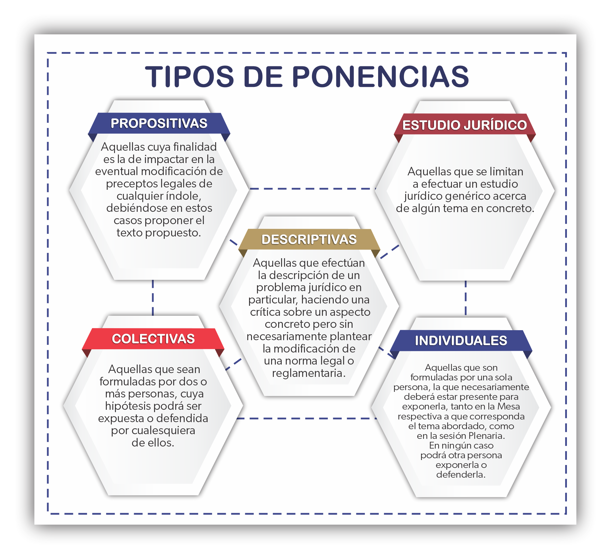
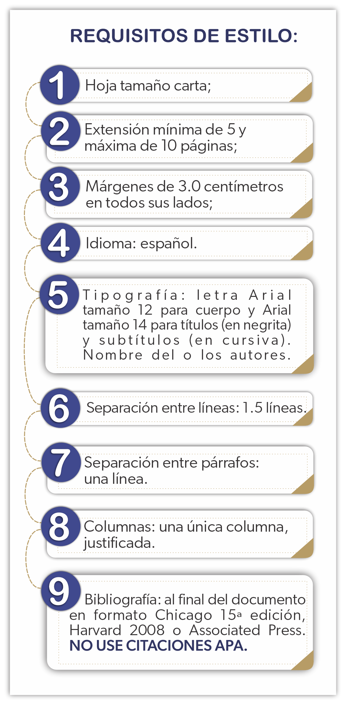
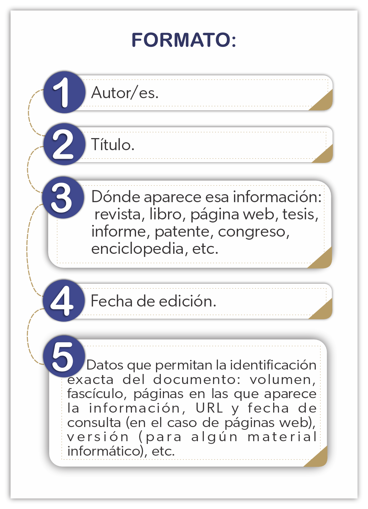
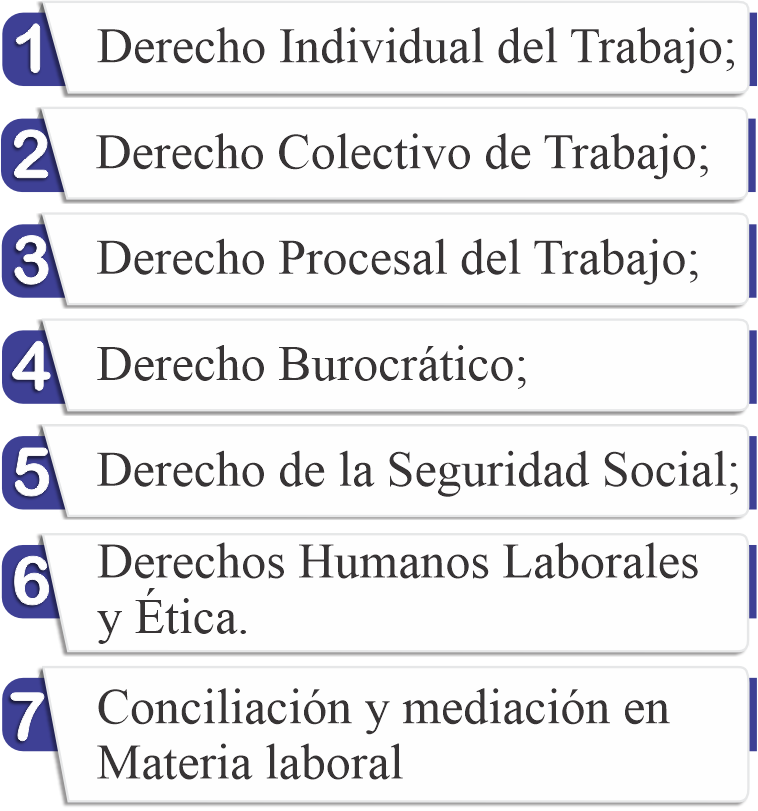

LINEAMIENTOS Y REGISTRO DE PONENCIAS
El objetivo del presente Instructivo de la «ACADEMIA MEXICANA DEL DERECHO DEL TRABAJO Y DE LA PREVISIÓN SOCIAL (AMDTPS)», es darle a los participantes de la Asamblea una guía sencilla a fin de definir qué elementos habrán de contener las Ponencias de los participantes en la misma, así como consejos prácticos para su realización; esto con el objetivo de dar uniformidad a los trabajos que se presenten, buscando con esto un desarrollo ágil en los trabajos de todas las Mesas en el proceso de aprobación de las Ponencias y por tanto, también en la votación de la Sesión Plenaria.
Para una mejor comprensión, definiremos previamente algunos conceptos:
- ¿QUÉ CONSIDERAMOS EN LA AMDTPS UNA PONENCIA?
-
Se trata de un artículo o ensayo breve en el cual su autor plantea, desarrolla y argumenta un problema jurídico en materia laboral o de seguridad social, y propone a la audiencia soluciones razonadas. Dicho trabajo debe de contener ideas originales del autor, y por simples razones metodológicas deberá contener al menos:
 - ¿PARA LA AMDTPS, CUÁNTOS TIPOS DE PONENCIAS HAY?
-

Solo se expide constancia a quien presente la ponencia.
> - ¿QUÉ REQUISITOS DEBEN CONTENER LAS PONENCIAS?
-
Datos Personales

Requisitos de estilo
Deberán referirse a los temas enumerados en la presente Convocatoria, y ser subidas a trevés de esta pagina en el formulario que mas adelante se encuantra a más tardar el 15 de Marzo de 2024 a las 21:00 horas (centro del país), con los siguientes requisitos:

Cada ponente es responsable de llevar un mínimo de 4 copias de su trabajo.
El formato recomendado para sus citas es el siguiente:
Aquí puede usted descargar la plantilla para ponencias con el formato requerido, para Word 2007 y posteriores.
- ¿CÓMO SE ENVÍAN LAS PONENCIAS?
-
Las ponencias deberán subirse a través de esta página en el formulario que se encuentra mas adelante. Sólo se recibirán de manera exclusiva por web. Se aceptarán documentos producidos por procesadores de texto en formatos DOC, DOCX, y PDF no protegido. Se confirmará la recepción de la ponencia, se revisará y si cumple con los requisitos se confirmará su presentación vía electrónica.
Las ponencias que no cumplan con los requisitos de estilo indicados serán rechazadas automáticamente. Si su ponencia fue rechazada por cuestiones de estilo descargue la plantilla oficial, utilícela y vuelva a presentarla.
Si su ponencia no tiene datos de contacto en la carátula será rechazada automáticamente y NO RECIBIRAN DIPLOMA COMO PONENTES.
Habrá un Comité Académico de Expertos, específicamente encargado de revisar las Ponencias que se presenten en las Mesas de:
Las dudas con la elaboración de sus ponencias podrán ser resueltas escribiendo a ponencias@amdtps.org antes de la fecha límite establecida en la Convocatoria de cada Asamblea. Sólo se recibirán ponencias que reúnan los requisitos a criterio del Comité respectivo.
Las ponencias no presentadas en tiempo y forma quedarán automáticamente rechazadas para ser presentadas en las Mesas. Que una ponencia sea aprobada para presentación no garantiza que la Mesa Directiva apruebe dicha ponencia.
Los ponentes que no asistan a defender sus ponencias a las Mesas de trabajo o a la Sesión Plenaria, NO RECIBIRÁN DIPLOMA COMO PONENTES.
Los participantes que no envíen sus ponencias antes del15 de marzo de 2024 a las 21:00 (hora del centro del país) no podrán presentar sus ponencias ante las Mesas. Se reitera que NO SE ACEPTARÁN MÁS DE 2 PONENTES POR CADA PONENCIA.
- ¿CÓMO SE DEFIENDEN LAS PONENCIAS?
-
No basta elaborar una ponencia para que la misma sea publicada en la página web de la AMDTPS; antes debe ser sometida a un doble escrutinio: en la Mesa relativa al tema abordado en ella, y la votación aprobatoria final de la Sesión Plenaria.
Es necesario exponerla (no leerla), y también defenderla en caso necesario por el o los autores. Cabe apuntar que en el trabajo académico —y por ende en la AMDTPS— nadie tiene razón a la fuerza, ni tampoco hay una razón única. El trabajo académico se nutre siempre del complejo proceso de la discusión, la refutación y la conciliación de ideas; por ello, hay que entender que el trabajo en las Asambleas de la AMDTPS es más formativo que meramente informativo.
Para mayor ilustración del interesado, se recomienda ingresar al Apartado correspondiente de nuestra página web, pulsando en la pestaña de nuestro REGLAMENTO SOBRE EL FUNCIONAMIENTO DE LAS MESAS DE TRABAJO EN LA ASAMBLEA ANUAL DE LA AMDTPS.
En dicho reglamento interno se establece cómo se desarrollarán los trabajos de las distintas mesas temáticas de la Asamblea anual.
Se otorgará constancia de ponentes por la Facultad de Derecho y Ciencias Sociales de la Universidad Michoacana de San Nicolás de Hidalgo con valor curricular
FECHA LÍMITE: 15 DE MARZO DE 2024 A LAS 21:00 HORAS DEL CENTRO DEL PAÍS.
Ponencias que no cumplan con los requisitos aquí establecidos serán rechazadas automáticamente.